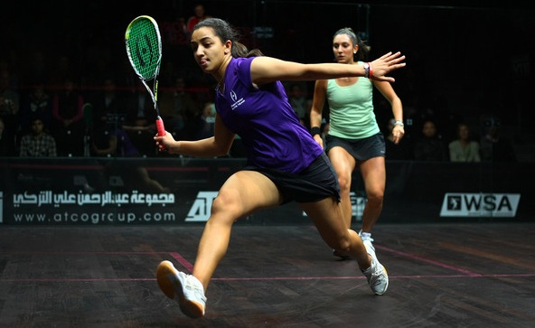

Among the centuries girls were able to achieve move and have a great plave in our society. They are working now in different domains that very important and they were even able to beat men in some of them because we girls can do everything and anything wihout letting anyone underestimate us and get in our way because WE ALL CAN DO IT !!! . And here are some example of women who were the first:
| Name | Achievement | Photo |
| Marie Curie | She was the first woman to win a Noble Prize , the first person and only woman to win twice in , in two different sciences. She was also the first woman to become a professor at university of Paris. |  |
| Malak Hifni Nassif | An egyptian feminist who contributed greatly to the intellectual and political deiscourse on the advancement of Egyptian women in the early 20th century |  |
| Hilana Sedarous | She became Egypt's FIRST female doctor in 1930 and she opened her own private clinic |  |
| Lotfia Al-Nadi | She became Egypt's FIRST female pilot in 1933. So she inspired dozens of women to attend flying school |  |
| Rawya Attiya | She became the FIRST femal officer in the Armed Forces in 1956 then the FIRST female parliamentarian in 1957 |  |
| Eva Habeel | She became the FIRST female mayor in 2008. She beat five male candidats vying for HER seat. |  |
| Caroline Maher | She became the FIRST Arab woman to be inducted into the Taekwondo hall of fame in 2013. She has 130 trophies from 38 countries |  |
| Raneen Al Nadi | She became the WORLD number ONE squash champion in 2015. FIRST Egyptian squash player ranker no.1 . |  |
| Sara Samir | She became FIRST female football refree for male team in 2015. |  |